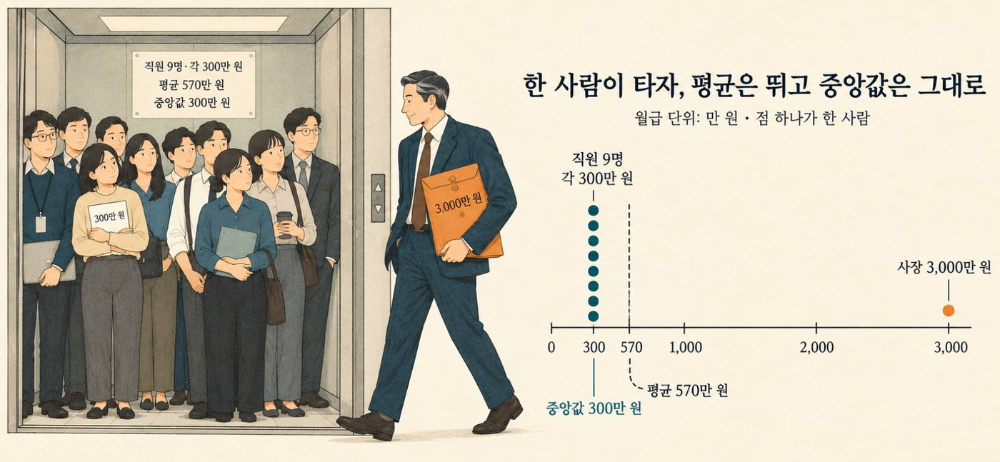
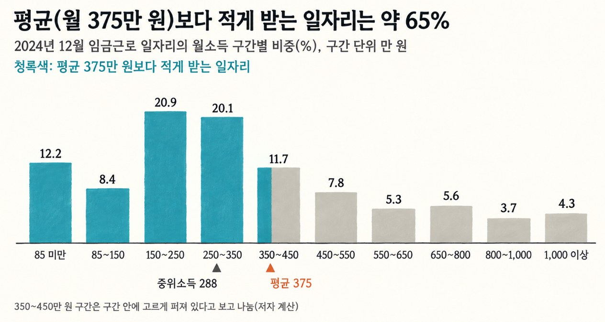

[그 숫자, 누가 셌어요? 1] 내 연봉은 왜 늘 평균보다 낮을까
평균 월급 375만 원인데 열 명 중 여섯은 그보다 적게 받습니다. 평균과 중앙값이 갈라지는 이유를 직접 계산해 봅니다.
그 숫자, 누가 셌어요? · 8편 중 2번째 글
연재 목차 보기
대표가 준비 중인 책 『그 숫자, 누가 셌어요?』의 원고를 연재합니다. 숫자는 모두 한국의 공개 자료를 내려받아 대표가 직접 다시 계산했습니다. 자료는 저장소에서 받을 수 있습니다.
연말이면 회사 게시판이나 뉴스에 '평균 연봉' 숫자가 올라오고, 동기들은 그 숫자를 자기 급여명세서와 견주어 봅니다. 그런데 이 숫자는 이상하게도 늘 내 월급보다 조금 높습니다. 평균이라면 절반쯤은 그보다 많이, 절반쯤은 적게 받아야 할 텐데, 주변에서 평균 위라는 사람은 좀처럼 만나기 어렵습니다. 그 평균은 대체 누구를 센 숫자일까요?
평균 월급 375만 원
2026년 2월 23일 오후, 휴대폰에 기사 제목이 떴습니다. "직장인 평균 월급 375만 원." 국가데이터처가 2024년 임금 근로자의 소득을 발표한 날입니다.
기사를 누른 사람은 아마 자기 급여명세서부터 떠올리고 375만 원과 견주어 봤을 겁니다. 그리고 많은 사람이 조금 우울해졌을 겁니다. 이런 기사가 나올 때마다 흔히 듣는 말이 있습니다.
"나만 평균 아래인가."
"누가 이렇게 받아요?"
이상한 일입니다. 평균이라면 대충 절반은 그보다 많이 받고, 절반은 적게 받아야 할 것 같습니다. 그런데 왜 "나는 평균 아래"라는 말은 이렇게 흔하고, "나는 평균 위"라는 말은 드물까요?
평균은 '보통'이다?
우리는 평균을 '보통'이라는 뜻으로 씁니다. 평균 키, 평균 수명, 평균 점수. 학교에서 성적표를 받을 때도 반 평균보다 높으면 중간은 넘었다고 생각했습니다.
점수나 키에서는 이 생각이 크게 틀리지 않습니다. 키가 평균보다 큰 사람과 작은 사람은 대체로 반반입니다. 그래서 월급도 그럴 거라고 믿습니다. '평균 월급 375만 원'이라는 말을 들으면, 머릿속에서는 자동으로 '보통 직장인은 375만 원을 받는다'로 바뀝니다.
그러면 내 월급이 375만 원보다 적다는 건, 내가 '보통'에 못 미친다는 뜻이 됩니다. 확인하는 방법은 간단합니다. 375만 원보다 적게 받는 사람이 몇 명인지 세어보면 됩니다.
열 명 중 여섯은 평균 아래
같은 발표에는 기사 제목에 잘 안 오르는 숫자가 하나 더 있었습니다. 월 350만 원을 못 받는 일자리가 전체의 61.6%였습니다. 350만 원은 평균 375만 원보다 25만 원이나 낮은데도, 그보다 적게 받는 사람이 열 명 중 여섯이 넘습니다.
숫자가 하나 더 있습니다. 모든 일자리를 월급 순서대로 한 줄로 세우면, 딱 가운데에 선 사람은 288만 원을 받습니다. 평균보다 87만 원 적습니다.
그러니까 "나는 평균 아래"라는 느낌은 착각이 아니었습니다. 대부분의 직장인에게는 그냥 사실입니다. 평균보다 적게 받는 쪽이 오히려 '보통'이었던 겁니다. 내 월급이 어디쯤인지 가늠할 때 견줄 숫자는 가운데 사람의 288만 원입니다.
그런데 그렇다면 더 이상해집니다. 대부분이 평균보다 적게 받는데, 어떻게 평균이 375만 원이 될 수 있을까요?
엘리베이터에 한 사람이 타면
회사 엘리베이터에 직원 아홉 명이 타 있다고 해 봅시다. 모두 월 300만 원을 받습니다. 이 엘리베이터의 평균 월급은 300만 원입니다.
문이 닫히기 직전에 월 3,000만 원을 받는 사장이 탑니다. 열 명의 월급을 모두 더하면 5,700만 원, 열로 나누면 570만 원입니다. 직원 아홉 명의 월급은 1원도 바뀌지 않았는데, 이제 열 명 중 아홉 명이 '평균 아래'가 됐습니다.
평균은 모두의 몫을 다 합친 뒤 골고루 나눌 때 각자가 갖는 몫입니다. 그래서 아주 큰 숫자 하나가 들어오면 평균이 그쪽으로 끌려갑니다. 반면 줄의 딱 가운데에 선 사람은 사장이 타도 여전히 300만 원입니다.
키에는 이런 사장이 없습니다. 키가 보통 사람의 열 배인 사람은 없으니까요. 하지만 월급에는 있습니다. 2024년 월 1,000만 원 이상을 받는 일자리는 4.3%, 스물다섯 개 중 하나 꼴이었습니다. 그리고 그 위로는 끝이 없습니다. 월급 순서로 줄을 세우면 오른쪽 끝이 아주 멀리까지 길게 늘어진 모양이 됩니다. 이 긴 끝자락이 평균을 위로 끌어올립니다. 그래서 월급처럼 위쪽 끝이 열려 있는 숫자에서는 평균만 보고 '보통'을 짐작하면 실제보다 높게 짐작하게 됩니다.
알아두면 좋은 통계 · 평균과 중앙값
여러 숫자를 하나로 요약하는 방법은 여럿입니다. 가장 많이 쓰는 두 가지가 평균과 중앙값입니다.
평균: 모두 더한 뒤 사람 수로 나눈 값입니다. (위 엘리베이터 예시에서는 5,700만 원 ÷ 10명 = 570만 원)
중앙값: 크기 순서대로 줄을 세웠을 때 딱 가운데 값입니다. (사람 수가 짝수면 가운데 두 사람의 평균을 구합니다. 위 엘리베이터 예시에서는 다섯째와 여섯째가 모두 300만 원이니 중앙값도 300만 원이 됩니다.)

두 값이 갈라지는 이유는 숫자들이 퍼져 있는 모양, 즉 분포 때문입니다. 키처럼 가운데를 중심으로 양쪽이 비슷하게 퍼진 분포에서는 평균과 중앙값이 거의 같습니다. 하지만 월급처럼 오른쪽으로 꼬리가 길게 늘어진 분포에서는 평균이 꼬리 쪽으로 끌려가 중앙값보다 커집니다. 통계에서는 이런 모양을 '오른쪽으로 치우친 분포'라고 부릅니다.
다른 값들과 동떨어진 '사장의 3,000만 원' 같은 값을 통계에서는 이상값(이상치)이라고 합니다. 평균은 이런 이상값 하나에도 크게 흔들리지만, 중앙값은 거의 흔들리지 않습니다.
그래서 다음 세 가지만 기억해 두면 됩니다.
평균이 중앙값보다 크면 위쪽으로 긴 꼬리가 있다. 즉, 평균보다 적게 받는 사람이 절반보다 많다.
'보통 사람'을 가늠할 때는 중앙값, '전체 총액'을 따질 때는 평균을 봐야 한다.
직장인 월급의 중앙값은 통계 발표에서 보통 '중위소득'이라는 이름으로 나옵니다.
직접 세어 봤다
국가데이터처 발표에는 일자리를 월소득에 따라 10개 구간으로 나눈 표가 들어 있습니다. 이 표(그림 1-2)를 바탕으로 평균보다 적게 받는 비율을 직접 계산해 보았습니다.

그림 1-2에서 350만 원 미만인 네 구간을 더하면 61.6%입니다. 평균인 375만 원은 '350만~450만 원' 구간 안에 속해 있습니다. 이 구간 안에서 소득이 고르게 퍼져 있다고 가정하면, 해당 구간의 약 4분의 1(2.9%)이 평균 아래에 해당합니다. 이를 이전 구간과 합치면 전체의 약 65%가 됩니다.
이 가정이 조금 틀리더라도 결론은 크게 바뀌지 않습니다. 해당 구간 속 사람들이 모두 평균 위에 있다고 보더라도 61.6%이고, 모두 평균 아래라고 하더라도 73.3%입니다. 어느 쪽으로 해석하든 열 명 중 여섯에서 일곱 명은 평균 아래에 속하게 됩니다.
다른 자료로 다시 세기
하나의 자료만으로 단정할 수는 없기에, 집계 방식이 완전히 다른 자료로 동일한 계산을 해보았습니다. 바로 국세청의 연말정산 통계입니다.
2023년 소득으로 연말정산을 마친 근로자 2,085만 명 가운데, 총급여 3,000만 원 이하가 45.3%, 3,000만~5,000만 원 사이가 25.9%를 차지했습니다. 이 당시 평균 연봉은 4,332만 원이었습니다.
앞서 적용한 동일한 추정 방식으로 계산해 보면, 연말정산 통계에서도 평균보다 적게 받는 사람은 약 63%로 집계됩니다. 결국 자료를 바꾸어 보아도 결과는 크게 다르지 않습니다.
자료 무엇을 셌나 평균 중앙값 평균보다 적게 받는 비율(저자 계산) —————— ———— ———– ———– —————- 국가데이터처 2024년 월 375만 원 월 288만 원 약 65% 2024년 12월의
임금근로일자리 일자리,
소득 월소득
국세청 2023년 귀속 연말정산한 연 4,332만 발표 없음 약 63% 연말정산 근로자, 1년 원
총급여
하나는 일자리를, 하나는 사람을 셌습니다. 두 곳에서 일하는 사람은 앞의 자료에서는 두 번 세어집니다. 하나는 12월 한 달 치를, 하나는 1년 치를 셌습니다. 그렇게 다르게 셌는데도 답은 같았습니다. 열 명 중 여섯 이상은 평균보다 적게 받습니다.
꼬리는 얼마나 무거운가
국세청은 근로자를 급여 순서로 세운 뒤 1,000개 구간으로 나눈 천분위 자료도 내놓습니다. 이 자료를 분석한 보도에 따르면 2024년 상위 10%가 전체 총급여의 31.71%를 받았고, 나머지 90%의 1인당 평균은 3,395만 원이었습니다.
이 두 숫자로 전체 평균을 거꾸로 계산할 수 있습니다.
전체 평균 = (3,395 × 0.9) / (1 - 0.3171) ≈ 4,470만 원
같은 계산을 2019년 숫자(나머지 90% 평균 2,865만 원, 상위 10% 몫 31.13%)에 해 보면 3,744만 원이 나옵니다. 국세청이 발표한 2019년 평균과 같습니다. 계산이 맞다는 뜻입니다.
그러니 2024년 근로자 평균은 약 4,470만 원이고, 상위 10%를 빼면 3,395만 원으로 약 1,080만 원 떨어집니다. 열 명 중 한 명을 뺐을 뿐인데 평균이 4분의 1 가까이 줄어듭니다. 상위 10%의 1인당 평균은 약 1억 4,200만 원입니다.
회사나 업종의 '평균 연봉' 기사를 볼 때도 같은 질문이 통합니다. 맨 위 몇 사람을 빼면 평균이 얼마로 내려가는지 물어보세요.
중앙값만 보면 안 보이는 것
여기까지 읽으면 이런 결론을 내기 쉽습니다. "평균은 부자들 때문에 부풀려져 있으니 믿지 말고, 중앙값만 보면 된다." 절반만 맞는 말입니다.
엘리베이터 예에서 사장의 월급이 3,000만 원에서 6,000만 원으로 두 배가 됐습니다. 평균은 570만 원에서 870만 원으로 뛰지만, 중앙값은 여전히 300만 원입니다. 중앙값은 가운데 사람을 잘 보여 주는 대신, 맨 위에서 무슨 일이 일어나는지는 전혀 보지 못합니다.
실제로 그런 일이 있었습니다. 국세청 천분위 자료를 분석한 보도를 보면, 2019년부터 2024년까지 5년 동안 급여가 이렇게 늘었습니다.
| 누구 | 2019년 1인당 평균 | 2024년 1인당 평균 | 늘어난 비율 |
|---|---|---|---|
| 상위 0.1% | 7억 6,763만 원 | 9억 9,937만 원 | 30.2% |
상위 10%를 뺀 90% 2,865만 원 3,395만 원 18.5%
맨 위 0.1%의 급여는 나머지 90%보다 훨씬 빨리 늘었습니다. 그런데 이 변화는 중앙값에는 거의 흔적을 남기지 않습니다. 가운데 사람은 맨 위 0.1%가 얼마를 받든 자기 자리에 그대로 있으니까요. 반면 평균에는 그대로 반영됩니다.
평균도 틀린 숫자는 아니었습니다. 평균과 중앙값은 서로 다른 질문에 답할 뿐입니다.
"보통 사람은 얼마를 받나?" → 중앙값
"전체 급여를 모두가 나눠 갖는다면 얼마인가?" → 평균
"맨 위가 나머지와 얼마나 멀어지고 있나?" → 평균과 중앙값의 차이, 그리고 구간별 몫
2024년 일자리에서는 평균과 중앙값이 87만 원 벌어져 있었습니다. 이 틈이 클수록 맨 위의 꼬리가 무겁다는 뜻입니다.
누구를 셌나?
2월의 그 기사 제목 "직장인 평균 월급 375만 원"을 이제는 조금 다르게 읽을 수 있습니다.
이 숫자는 거짓말이 아닙니다. 다만 맨 위의 긴 꼬리까지 모두 더해서 나눈 숫자라서, '보통 직장인'의 월급과는 거리가 있습니다. 보통 직장인을 묻는다면 답은 288만 원이고, 열 명 중 여섯은 평균보다 적게 받습니다.
그러니 내 월급이 평균보다 낮다는 사실은, 내가 보통 아래라는 뜻이 아닙니다. 대부분의 사람과 같은 자리에 있다는 뜻일 가능성이 더 큽니다.
다음에 "평균 ○○"이라는 숫자를 보면, 이 책의 첫 질문을 떠올려 보세요.
"이 숫자는 누구를 셌나? 맨 위의 몇 사람이 평균을 끌고 가고 있지는 않은가? 가운데 사람은 얼마인가?"
마치며
연봉 협상을 앞두고 "업계 평균 연봉"을 찾아봤다면, 그 숫자를 내 자리로 읽으면 곤란합니다. 2024년 일자리의 한가운데는 월 288만 원이었고, 평균 375만 원보다 적게 받는 일자리가 열 개 중 여섯이 넘었습니다.
회사 안에서도 같은 일이 생깁니다. 고액 연봉자 몇 명이 있는 팀은 평균 연봉이 팀원 대부분의 연봉보다 높게 나옵니다. 협상 자리에서는 그 팀의 가운데 사람이 얼마를 받는지부터 물어볼 만합니다.
직접 확인해 보기
파일: github.com/einfollab/basic_statics ▸ 1.국세청 소득세자료 ▸ 2024년 임금근로일자리 소득(보수) 결과 보도자료 PDF
챗GPT에게 이렇게 물어보세요
파일을 올린 뒤 아래 문장을 하나씩 붙여 넣으면 됩니다.
PDF의 '월소득 구간별 일자리 비중' 표를 표로 옮기고, 비중의 합이 100%인지 먼저 확인해 줘. 구간별 비중을 막대그래프로 그리고, 평균 375만 원과 중앙값 288만 원을 세로선으로 표시해 줘.
같은 방법으로 중앙값이 몇 번째 구간에 들어 있는지 찾고, 구간 안에서 대략 얼마일지 추정해 줘. 발표된 중위소득 288만 원과 비교해 줘.
확인할 것
이 숫자가 나오면 맞습니다. 구간별 비중의 합이 100%이고, 추정한 중앙값이 발표된 288만 원 가까이 나오면 맞게 읽은 것입니다.
더 많은 질문과 파일 설명은 저장소 폴더의 README에서 볼 수 있습니다.
자료 출처
국가데이터처 「2024년 임금근로일자리 소득(보수) 결과」(2026.2.23): 세계일보, 소득 구간별 비중·평균·중위소득, 한국경제, 기업 규모별 평균
국세청 2023년 귀속 연말정산 통계(2024.12.19): 한국세정신문
국세청 근로소득 천분위 자료 2019·2024년 귀속(김종민 의원실 분석, 2026.8.5): 한국세정신문
2020년 귀속 평균 총급여 3,828만 원(전년 대비 84만 원 증가, 2019년 3,744만 원 검산에 사용): 파이낸셜뉴스
2019년 귀속 평균 총급여 3,744만 원(1,917만 명, 국세청 발표값): 택스워치